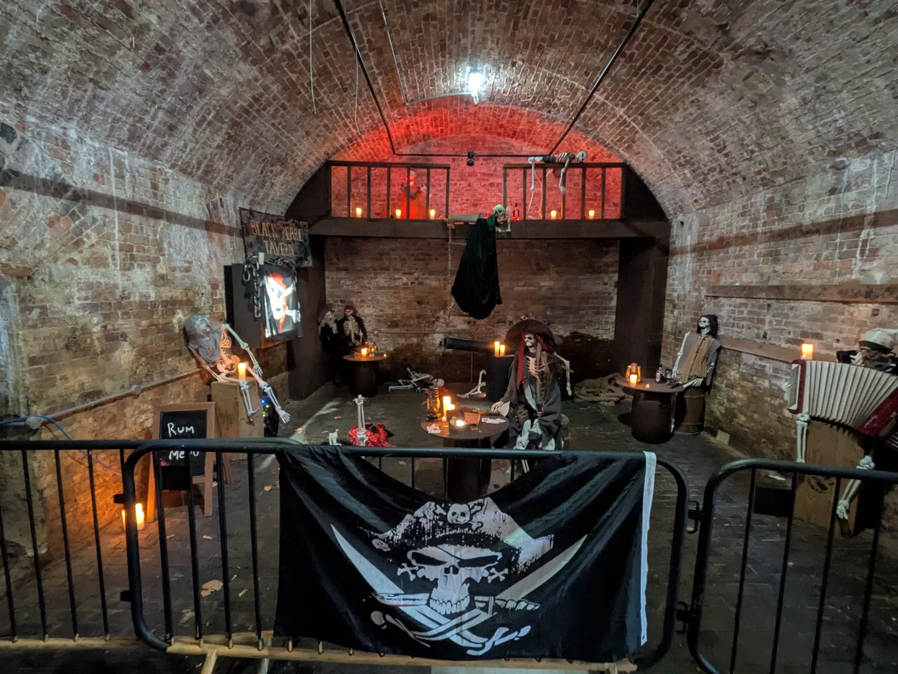

Your adventure, your challenge
Scouts take more responsibility for planning and doing. The programme includes outdoor skills, camping, hiking, teamwork and increasingly ambitious adventures.
Go further
Longer camps, expeditions and practical outdoor skills.
Take the lead
Plan activities, solve problems and support your team.